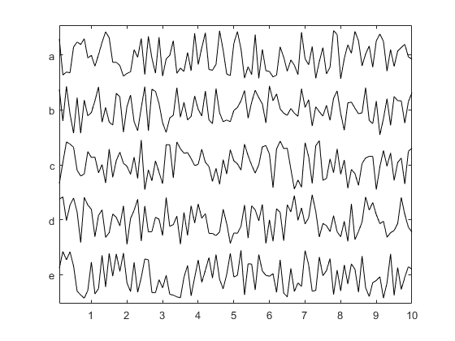

stackedPlot
Stacked linear plot.
Syntax
stackedPlot(data) stackedPlot(x, data) stackedPlot(x, y, data)
Description
stackedPlot produces a series of stacked linear plots of the rows in data (a 2D matrix) against the vector x. The vector y defines the y-axis label for each linear plot. The plot scaling is defined using the global maximum and minimum of the data. The plot can be annotated in the normal fashion after display. For example, each of the following
stackedPlot(rand(5, 100));
stackedPlot(0.1:0.1:10, rand(5, 100));
stackedPlot(0.1:0.1:10, {'a', 'b', 'c', 'd', 'e'}, rand(5, 100));
will produce stacked plots of random data, but with different axis labels.
Inputs
x |
vector defining the x-axis values |
y |
vector defining the y-axis labels used for each plot |
data |
2D matrix to plot |
Optional Inputs
Optional 'string', value pairs that may be used to modify the default computational settings.
| Input | Valid Settings | Default | Description |
|---|---|---|---|
'Spacing' |
(numeric scalar) | 0.1 |
Spacing between the individual plots as a fraction of the maximum plot range. |
'Symmetric' |
(Boolean scalar) | false |
Boolean controlling whether the max and minimum of the individual plots are forced to be symmetric. This forces the y-ticks to be at zero. |
See Also
plot